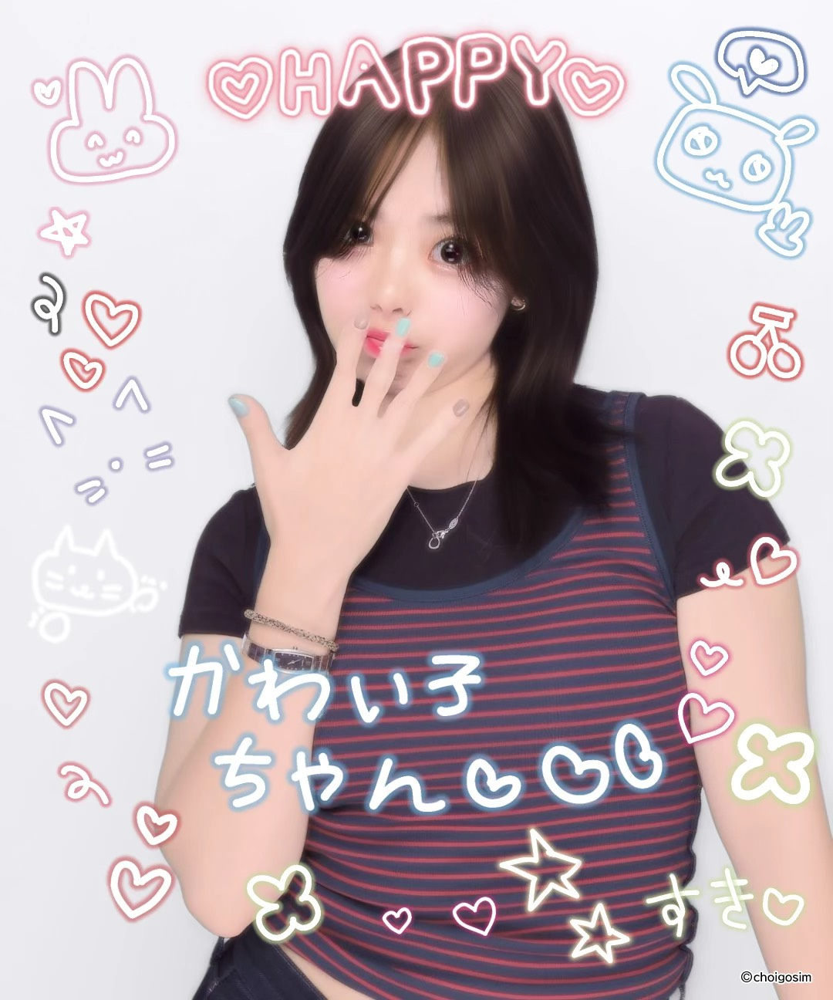

自我介紹

CHOU SSU YU
2006.06.08 · TAIWAN
Personal Dossier / 個人檔案
NAME // 姓名
周偲語
CHOU SSU YU
生日 / BIRTHDAY
2006.06.08
性別 / GENDER
女
學歷 / EDUCATION
南臺科技大學
STUST · Current
AGREE TO DISAGREE
隨手塗鴉區
用滑鼠或手指在畫布上自由創作
設計能力與精選作品
Ai
Adobe Illustrator
向量插畫 / 標誌識別 / 排版視覺
精確路徑繪製與幾何設計
Ps
Adobe Photoshop
影像合成 / 調色修圖 / 視覺拼貼
高質感光影修飾與素材合成
Ae
Adobe After Effects
動態圖像 / 影視後製 / 特效合成
節奏感動畫演繹與剪輯串接


音樂品味
Spotify Player
直接試聽 / STREAM ONLINE
可替換為 Spotify 藝人、歌單或專輯連結
音樂是設計思考的最佳催化劑。
日常最喜歡聽 K-POP，豐富的旋律、節奏與舞台魅力，總能為生活注入活力，也為創作帶來新的靈感。
#KPOP
#KoreanPop
#KPOPPlaylist
#MusicInspiration
"Every possibility begins with the courage to imagine."
— Sound & Vision Archive
推薦一首你喜歡的歌
推薦內容會保存在目前瀏覽器，其他訪客不會同步看到。
留言板
支援本機離線保存 (Local Storage)
已釘選的便條留言 (MEMO BOARD)
抓住移動圖示，便條會跟著游標移動，可放在任何位置並自由重疊；使用旋轉按鈕或鍵盤［ ］調整角度。